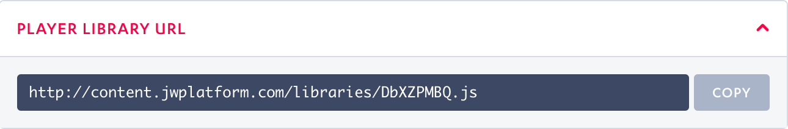
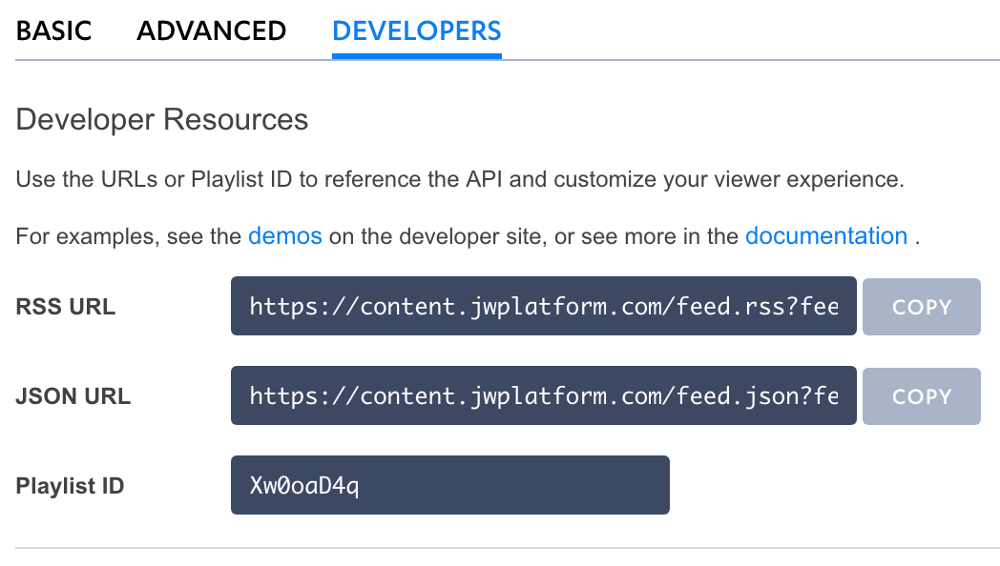

Recommended Feeds Widgets
Data-Driven Recommendations from JW Platform leverage audience behavior and content traits to drive deeper audience engagement and increase content monetization.
Research shows that well positioned page widgets that viewers can see and interact with while watching video are likely to drive even more viewer engagement than in-player recommendations alone. To promote out-of-player viewer engagement, we have designed several page widgets which consume and display data-driven feeds served from JW Platform. The code examples below can be implemented directly and skinned with our CSS Reference or serve as a starting part for more advanced implementations.
For more information about building and managing data-driven feeds please see our Platform API Reference and customer support article.

Getting Started
You can view the feeds widget demos on our developer site and fork the source code from Github. Each widget comes with a README providing instructions to run it locally.
JavaScript Widget
The Basics
The JavaScript widget uses jQuery, UnderscoreJS, and Handlebars. In order to modify the widget for your site, you will configure index.html and (optionally) templates/item.hbs.
The feed classes follow the JW Player skinning model. See our CSS Reference for more information on modifying css/style.css and skinning your widget.
View the JavaScript Feeds Widget Demo.
Setup your Player
The index.html file dynamically populates the content for <div id="player"> and <div id="feed">.
Replace the content library URL at the top of the page with one of your own to setup the player:
<script src="//cdn.jwplayer.com/libraries/DbXZPMBQ.js"></script>
You can find your content library URL using the "Manage" tab under "Players" in the Dashboard and clicking into any player or creating a new player. Our widget player is set up as responsive, 16:9 ratio, autostart, and mute on start.

Populate your Feed
Look for the following setup function at the bottom of the page:
<script>
var playerDiv = "player", feedDiv = "feed", feedTitleDiv = "feedtitle", media_id = "uNXCVIsW", feed_id = "Xw0oaD4q";
jsWidget.setup(playerDiv, feedDiv, feedTitleDiv, media_id, feed_id);
</script>
Replace the last two variables in var playerDiv with a media_id and feed_id from your content library. This specifies the content being pulled in to the widget.
You can find your feed_id using the "Feeds" tab under "Lists" in the Dashboard. When you select a feed title from the list, you can view the feed_id and URL.

js/feeds_harness.js file contains commented code to implement an RSS parser.See the Platform API Reference for more information on using the feed.rss endpoint programmatically.
Render your Feed
The templates/item.hbs file is the template object for each piece of content in your feed. It includes id, image, title, desc, and dur. You can use this file to determine which metadata displays in the feed.
By default, the widget does not display video description in the feed, but you can uncomment <p class="jw-media-description">{{desc}}</p> to show it. Try commenting/uncommenting different lines to hide/show their corresponding metadata in your feed.
<li id={{id}} class="jw-option">
<div class="jw-thumbnail-container">
<img class="jw-thumbnail" src="{{image}}">
</div>
<div class="jw-metadata-container">
<h3 class="jw-media-title">{{title}}</h3>
<!--<p class="jw-media-description">{{desc}}</p> -->
<time class="jw-media-duration">{{dur}}</time>
</div>
</li>
Run Customized Feed Widget
Follow the README to run your widget locally.
Angular JS Widget
The Basics
In order to modify the Angular JS widget for your site, you will configure landing.js and (optionally) feed.html.
The feed classes follow the JW Player skinning model. See our CSS Reference for more information on modifying css/app.css and skinning your widget.
View the Angular JS Feeds Widget Demo.
Setup your Player
The index.html file runs all of the scripts for the page. Replace the content library URL with one of your own:
<script src="//cdn.jwplayer.com/libraries/DbXZPMBQ.js"></script>
You can find your content library URL using the "Manage" tab under "Players" in the Dashboard and clicking in to any player or creating a new player. Our widget player is set up as responsive, 16:9 ratio, autostart, and mute on start.
Populate your Feed
Thelanding/landing.js file initializes the configuration of the Angular app, including feed and player setup. Look for the runonce function at the bottom of the page:
$scope.runonce = function () {
$rootScope.feed_id = "Xw0oaD4q";
$rootScope.media_id = "RltV8MtT";
};
Replace the two variables in $scope.runonce with a feed_id and media_id from your content library. This specifies the content being pulled into the widget.
You can find your feed_id using the "Feeds" tab under "Lists" in the Dashboard. When you select a feed title from the list, you can view the feed_id and URL.
feed.js to implement an RSS parser.Render your Feed
The feed/feed.html file is the template object for each piece of content in your feed. It includes image, title, description, and duration. You can use this file to determine which metadata displays in the feed.
By default, the widget does not display video description in the feed, but you can uncomment <p class="jw-media-description">{{item.description}}</p> to show it. Try commenting/uncommenting different lines to hide/show their corresponding metadata in your feed.
<div class="row jw-option" ng-repeat="item in feed" ng-click="loadVideo(item)">
<div class="jw-thumbnail-container">
<img src="{{item.image}}" class="jw-thumbnail"/>
</div>
<div class="jw-metadata-container">
<h3 class="jw-media-title">{{item.title}}</h3>
<!--<p class="jw-media-description">{{item.description}}</p>-->
<p class="jw-media-duration">{{toHms(item.sources[0].duration)}}</p>
</div>
Run Customized Feed Widget
The app.js file builds the page from all of the partials. Follow the Developer Demo README to run your widget locally.